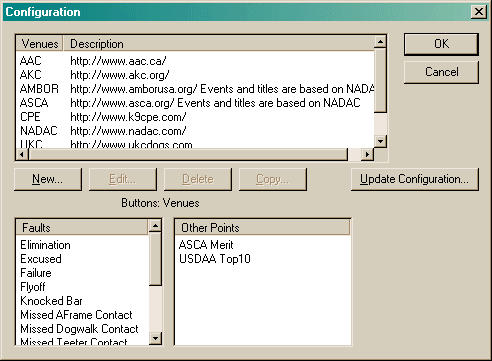
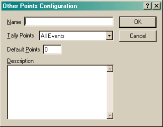
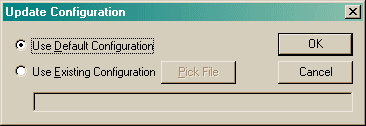

The main Configuration dialog presents four main areas to work with:
The four buttons, New, Edit, Delete and Copy, are enabled based on the item in the tree that currently has focus.
The important thing to understand about the configuration is that it is part of your data file. If you have two different files (for instance, you have two dogs and decided to keep their information in separate files), then the configuration for each dog is in that particular file. This means if you have updated one of the configurations, that update has no effect on the other. (This is convenient since if you just wanted to tinker the creating/modifying a venue, it would have no impact on your real data - assuming you work in a separate file!)

When you create a new venue or edit an existing one, the Venue Configuration dialog will appear. This is an area that you will probably not need to modify unless you are creating a new venue. (If you create a new venue, I would really appreciate it if you would send me a copy. I can then include it in the default configuration of the program. You can do this by running the Import Export Wizard and selecting the "Agility Record Book" format and then Export Configuration. The resulting file is what I'm interested in.)
When you create a new fault or edit an exiting one, the Fault dialog will appear. There is usually no need to create any additional fault types here. Any that you create in any runs will appear automatically in future dialogs. (If you feel there are faults that should be included here, please let me know.)
The Other Point configuration is probably the area a user is most likely to use. Other Points may include things like Breed Points. From discussions with people, these are computed differently in almost every breed. So rather than try and handle that, I left it to you!
The trick is to first configure the way points are done here. You can then enter any points you earn in each run using the "Other Points" button.

Name is what you would like to call this Other Points item.
Tally Points lists several ways that these points will be accumulated on the Points View:
Description is a good place to put an explanation of how the points are computed. When you create a entry on a run, all you enter is the number of points earned, so having the computation in front of you when you enter those points is very handy.
The Update Configuration button will bring up the following dialog:

This dialog allows you to merge in the default configuration (the one built into the program), or to select a specific file to merge. When a new version of the program is released and the configuration has changed, the program will prompt you at that point if you would like to update your configuration. At that point, it has automatically selected the Use Default Configuration option for you and by-passed the above dialog. However, if you opted not to update at that point, you can do so again at any time by using this dialog. (Updating the configuration is also available in the Import Export Wizard.)
If you select the Use Existing Configuration option, you must select the name of a file containing the information you wish to merge. This may happen if the configuration requires updating, but the program does not. It may also happen if a friend of yours creates a new venue and gives you the file so you can also use that venue.
Once you press OK, the update will proceed and you will then be presented with the results of that merge. Note, the merge process will not remove any data. Updating is usually a non-destructive process. (The only time it may be destructive is if a venue has changed significantly and revoked an existing title. So far, this has never happened. Names have changed, but that is different.) If you have removed venues from your configuration, the update process will restore them if they exist in the configuration being merged.
Important: In verion 1.2.1.8, a bug was identified that could cause a loss of data. In fixing the bug, it was determined that there are situations during the update process that can cause a loss of data. This is unavoidable. When the configuration for an event is modified (either directly, or via the update process), that may cause a scoring method to be modified or even removed. When this occurs, it is necessary to update any existing runs. If a scoring method has been removed, than any runs making use of that method must also be removed. If it has been modified, then a run may lose some data (for instance, if the scoring style changes from Time Plus Faults to Faults Then Time). During the update process, you will be warned that this may occur and what to do to avoid it.
{kind=link}